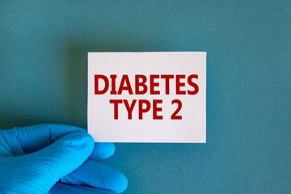

Minum kopi secara rutin mungkin dapat menurunkan risiko penyakit jantung dan stroke. Minum 4 atau lebih cangkir kopi per hari disinyalir dapat menurunkan 20% risiko stroke dibandingkan dengan orang yang tidak minum kopi sama sekali. Penelitian yang dipublikasikan jurnal Current Cardiology Reports membuktikan bahwa minum kopi secara rutin dalam dosis sedang tidak berpengaruh buruk terhadap kesehatan kardiovaskular.
Mempertahankan Berat Badan Ideal
Menjaga Berat Badan
Manfaat lain yang dapat Anda ambil dari konsumsi kopi adalah mempertahankan berat badan ideal, bahkan mungkin membantu menurunkannya. Studi yang dipublikasikan di European Journal of Clinical Nutrition mengamati perbandingan frekuensi minum kopi antara individu yang ingin menurunkan berat badan dengan yang tidak. Hasilnya, mereka yang ingin menurunkan berat badan dilaporkan minum lebih banyak kopi dan minuman berkafein daripada mereka yang tidak.
Mengurangi Resiko Diabetes Tipe 2

Mengurangi Resiko Diabetes Tipe 2
Kopi juga disebut memiliki manfaat untuk mengurangi risiko penyakit diabetes tipe 2. Mayo Clinic menyatakan bahwa terdapat beberapa studi yang membuktikan bahwa konsumsi kopi, baik yang mengandung kafein atau tidak, mungkin dapat menurunkan risiko terkena diabetes tipe 2. Namun, jika Anda sudah mengidap diabetes, kafein pada kopi berisiko memengaruhi kadar gula darah, entah menjadi lebih tinggi atau lebih rendah.
Menjaga Kesehatan Otak
Menjaga Kesehatan Otak
Kafein yang terkandung dalam kopi memiliki banyak efek positif pada otak, seperti meningkatkan kewaspadaan, membantu konsentrasi, meningkatkan suasana hati, dan mengurangi risiko depresi. Selain itu, jurnal Practical Neurology menyebutkan bahwa konsumsi kopi dapat mencegah penurunan fungsi kognitif otak, penyakit Parkinson, dan penyakit Alzheimer.
Menjaga Kesehatan Organ Hati
Menjaga Kesehatan Organ Hati
Manfaat kopi selanjutnya berkaitan dengan kesehatan organ hati. Journal of Clinical Gastroenterology menyebutkan bahwa asupan kopi berpotensi mengurangi jumlah lemak pada hati. Studi pada hewan yang disebutkan dalam jurnal itu menunjukkan bahwa kandungan kimia pada kopi dapat membantu proses detoksifikasi sel kanker pada hati.